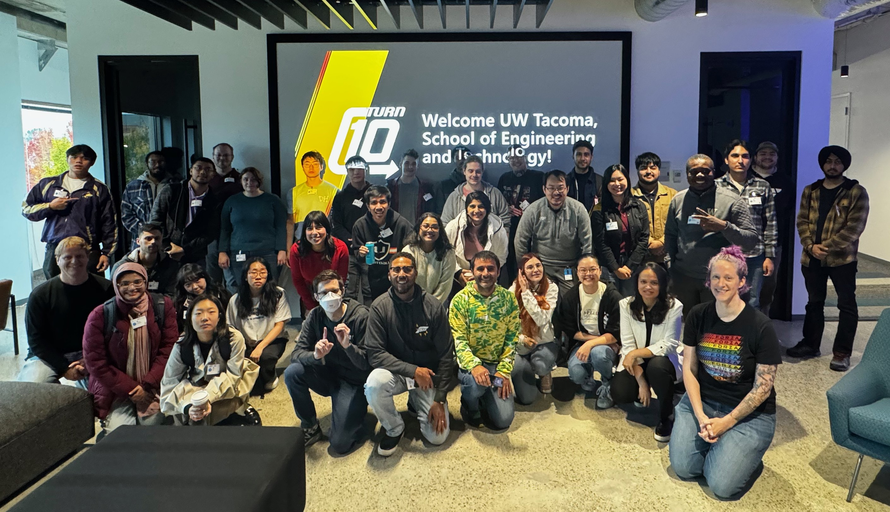

Women in Computing Science (2025)
I served as President of the Women in Computing Science (WiCS) organization, where I rebuilt and led a fun, inclusive,
and academic club that I wished had existed when I was a freshman. With no prior leadership experience, I reestablished
club operations by updating and reviewing past documentation, coordinating with advisors, organizing campus involvement events,
and working with my officer team to plan engaging quarterly schedules. We hosted a wide range of social and creative events
and later expanded into academically focused programming through collaborations with other organizations. This experience
strengthened my leadership, communicative and event planning skills and helped me build lasting connections.

UHackathon (2025)
I had the incredible honor of planning and competing in the first hackathon at UW Tacoma since 2019: UHackathon, the largest hackathon ever held in the South Puget Sound Region, with 92 talented competitors. Hosted at UW Tacoma, UHackathon aimed to create an accessible, community-driven event welcoming participants of all skill levels. Teams of four competed in three categories (Production, Experimental, and Fun) to develop projects centered around the theme: Robot Servant. This event was a collective effort among six UWT clubs: Tech StartUp, GitHired, Game Development, Women in Computing Science, UX@UWT, and Grey Hats.

UW Tri-Campus Game Jam (2025)
This was an exciting and highly coordinated event—after a three-year hiatus, we successfully revived the Tri-Campus Game Jam! What started as a collaboration between WiCS and the UWT Game Dev Club expanded to include all three UW campus Game Dev clubs. Students could work solo or in teams to create a game within one week, offering flexibility and creativity. The final showcase at UW Seattle featured real industry judges, making it an incredible event full of community, collaboration, and support.

Turn 10 Studios Tour (2024)
I was selected for an opportunity to visit Turn 10 Studios, where I had lunch and listened to employees discuss their roles and share career advice. This was an amazing experience that helped me realize how many different positions exist within tech companies, such as data analyst, producer, software developer, and D&I program manager. I was particularly fascinated by the design director, whose role stood out to me the most. What inspired me was how he served as the creative visionary for his projects — planning the overall direction and collaborating across multiple teams to bring that vision to life. The combination of creative leadership and people management made his position especially compelling to me, and it opened my eyes to the kind of career path I'd love to pursue.